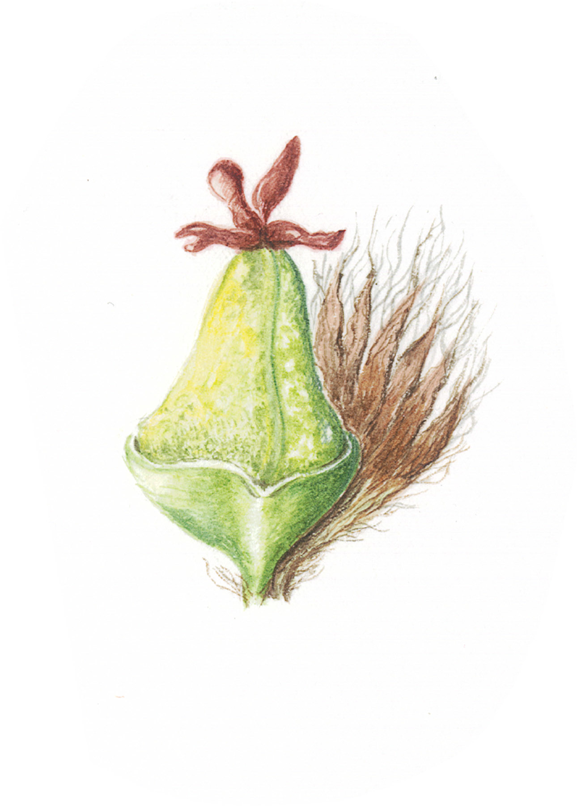

Work Experience
Evidence & Insight Officer
March 2023 - present
Generate evidence and insight from clinical data to improve the understanding of the prevalence and impact of inflammatory bowel disease in the UK.
Identify gaps in quality evidence and developing data strategies to support the charity’s objectives.
Develop front-end SharePoint architecture to enable more effective collaboration across multiple projects and work streams.
Publish web pages in Umbraco, creating copy and managing content.
Provide expertise on data governance and the ethical implications of AI, such as ChatGPT, with charity data and information.
Skills: SharePoint · Analysis (R/RStudio) · Epidemiology · Data Ethics · Project and Programme Management
Scottish AI Playbook Editor (voluntary)
Online | Oct 2022 - present
Contribute to the Scottish AI Playbook by:
- Adding informative and credible content to the wiki on themes of:
- Health
- Ethics
- Equality, equity, diversity and inclusion
- Community governance and participation
- Reviewing submissions to ensure content is accurate and up-to-date
Development Manager (voluntary, part-time)
EqualiTree CIC, UK | 2022 - present
- Deliver Lantra-accredited training to industry professionals
- Design and deliver practical horticultural courses to members of the public
Founder and Director
EqualiTree CIC, UK | 2019 - 2022
Oversaw the development of EqualiTree from start-up stage to developing partnerships and longer-term collaborations. Achievements to date:
- Secured start-up funding to support early-stage activities
- Delivered training courses to industry professionals
- Built several ongoing working relationships with businesses, community groups and social enterprises to develop research and practical solutions to local issues
Statistical Support Analyst (Management Information)
Scottish Courts and Tribunals Service, UK | May 2021 - February 2022
- Produced monthly data summaries and press releases for publication
- Liaised with Office of the Public Guardian and Tribunals regarding development of data products and bespoke analyses
- Supported team members by quality assessing Excel workbooks prior to release to internal and/ or external stakeholders
Business Innovation Manager
University of St Andrews, UK | 2018 - 2019
- Built collaborative relationships with SMEs across Scotland
- Co-designed and developed research projects with Scottish innovation centres and industry partners
- Organised and hosted networking events for academics and external funders
Founder and Director
Growing Research Ltd, UK | 2016 - 2018
Self-employed consultant providing bespoke R&D support to research-active SMEs and international NGOs:
- Provided training in statistical methods for applied research staff conducting field trials and ecological research
- Created bespoke data analysis workflows in R Studio for Bioversity International
- Provided early stage business development support to the National Land Based College
- Developed funding proposals for submission to Innovate UK and Horizon 2020 (winning €5M for The James Hutton Institute)
Research Development Executive
Coventry University, UK | 2015 - 2016
- Developed the research strategy for the Centre for Agroecology, Water and Resilience (CAWR)
- Co-ordinated data collection related to KPIs for reporting to senior management group
- Delivered group and one-to-one training to academic staff in research grant applications
Sustainable Horticulture Development Manager
Stockbridge Technology Centre, UK | 2012 - 2015
- Designed research projects for the commercial horticulture industry
- Established a precision farming training and research centre
- Delivered training workshops in precision farming technologies
- Managed experimental design and analysis of field trials
- Secured £1.4M of Innovate UK funding for Tru-Nject - precision agronomy that combined RTK-GPS autosteer of tractor and implement (spoke-wheel fertiliser injection system), satellite data for precision mapping of crop responses to targeted fertiliser inputs, and data from proximal soil sensing.
Education
MSc Health Data Science
University of Aberdeen, UK | Sep 2021 - August 2023 (part-time)
Instead of opting for a 60-credit research project, I have chosen to do two 30-credit courses each summer: Evaluating Policy Effects in Practice in year 1, and a work-based placement in year two.
- Introduction to Health Data Science
- Applied Statistics
- Health Informatics
- Machine Learning for Healthcare
- Evaluating Policy Effects in Practice
- Evidence-based Health
- Database Systems and Big Data
PhD Evolutionary Biology
University of Edinburgh, Royal Botanic Garden Edinburgh & The James Hutton Institute, UK | Sep 2007 - August 2011
Epiphyte diversity on Scottish Aspen (Populus tremula): a component of the extended phenotype
I studied genotype x environment interactions and community genetics in a native and biologically important, but rare, tree.
MSc Biodiversity and Taxonomy of Plants
University of Edinburgh & Royal Botanic Garden Edinburgh, UK | Sep 2005 - Aug 2006
- A combination of classical herbarium taxonomy, and molecular aspects of plant identification and classificaion
- My final project investigated the relationships between Prunus laurocerasus, Prunus lusitanica and allies from the Mediterranean and West and Central Asia.
BSc (Hons) Botany
Reading University, UK | Sep 2003 - July 2005
- Macroevolution and microevolution
- Plant biodiversity
- Crop physiology
- Statistics and experimental design
- Plant identification
My final project was to map and attempt to classify Carpobrotus spp. growing on the Bournemouth-Southbourne coast in the UK, comparing phenotypes from the various entities found to existing taxonomic treatments.
Professional Qualifications
Level 3 Instructional Techniques
AtLast! Training | 2021
One day online preparation and practical assessment in Edinburgh over two days
Practical ‘train the trainer’ course to qualify as an accredited trainer for Lantra (national land-based training provider)
ILM Level 5 Leadership and Management
Social Enterprise Academy/ Institute of Leadership and Management | 2020 - 2021
6-credit RQF Level 5/ SCQF level 9
Hybrid delivery
Project Management And Planning With Microsoft Project (2 days)
Leeds Metropolitan University, School Of Business | 2014
Leeds, UK
Introductory Certificate In Project Management (Association for Project Management)
Leeds Metropolitan University, School Of Business | 2013
Leeds, UK